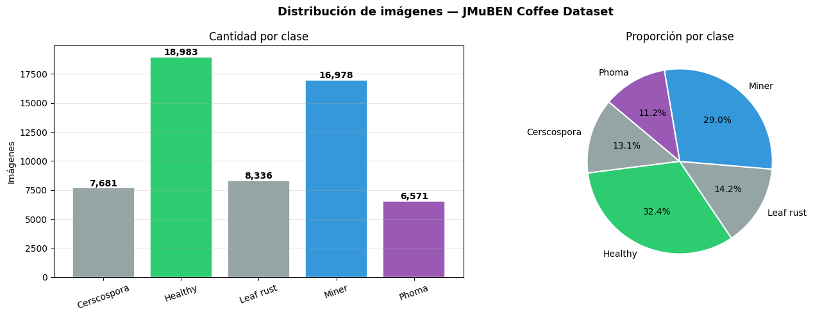
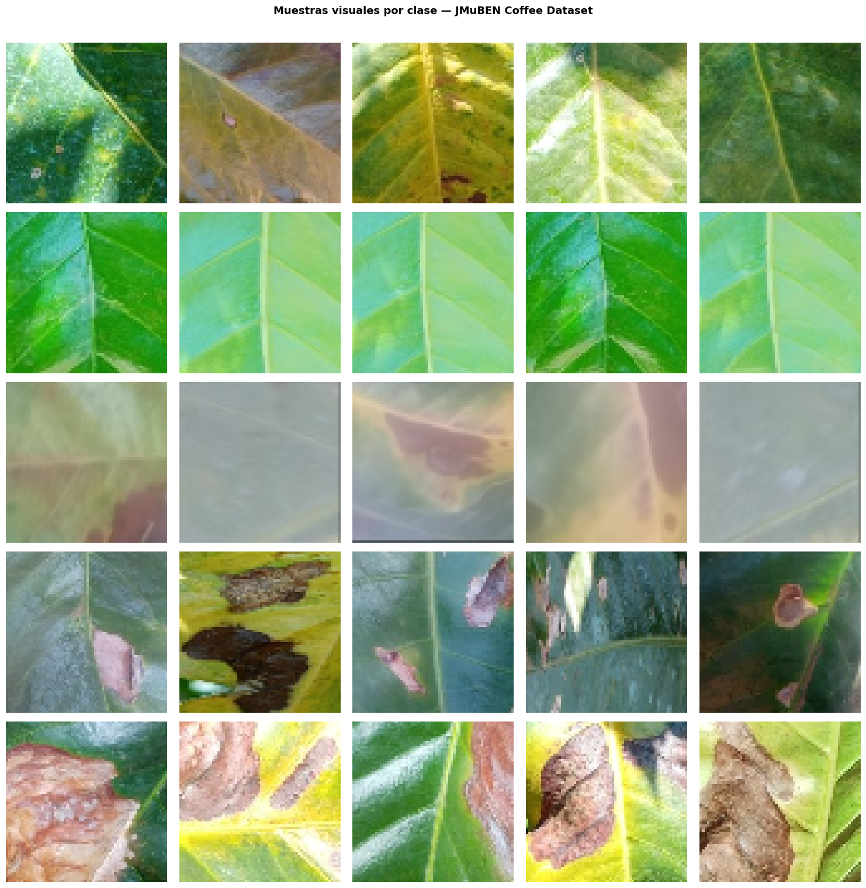
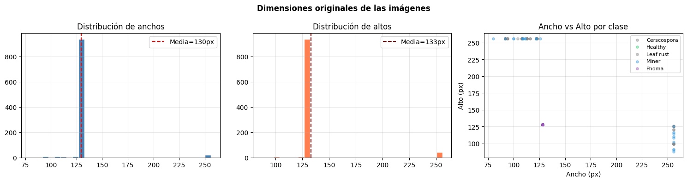
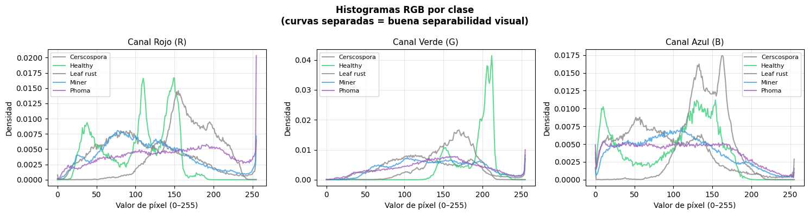
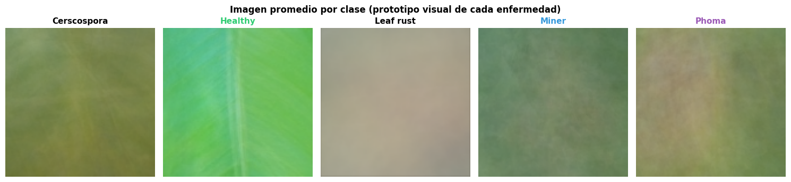
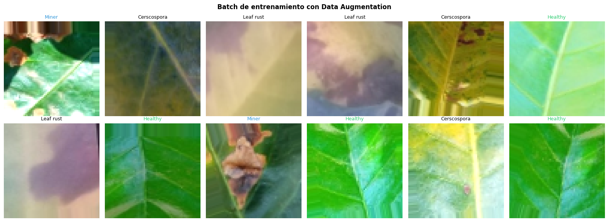

☕ Detección de Enfermedades en Hojas de Café Arábica#
EDA + CNN Baseline — Dataset JMuBEN#
Dataset: JMuBEN Coffee Dataset (Kaggle)
Link: https://www.kaggle.com/datasets/noamaanabdulazeem/jmuben-coffee-dataset
Clases: Healthy · Rust · Phoma · Cercospora · Miner
Total imágenes: ~58,555
Objetivo del notebook:
Realizar un EDA visual enfocado en Deep Learning
Implementar el modelo CNN básico del profesor
Evaluar si accuracy ≥ 90% → cambiar dataset
Impacto real: Las enfermedades detectadas (roya, cercospora, minador, phoma) son las mismas que afectan los cafetales colombianos. Un MVP de esta solución podría beneficiar a los ~540,000 caficultores del país.
1. Importaciones y configuración global#
import os
import random
import numpy as np
import pandas as pd
import matplotlib.pyplot as plt
import seaborn as sns
from PIL import Image
import tensorflow as tf
from tensorflow.keras import layers, models, callbacks
from tensorflow.keras.preprocessing.image import (
ImageDataGenerator, load_img, img_to_array
)
from sklearn.metrics import classification_report, confusion_matrix
# ────────────────────────────────────────────────────────────
DATA_DIR = '../Datasets'
# ─────────────────────────────────────────────────────────────────────────────
IMG_SIZE = (64, 64)
BATCH_SIZE = 128
EPOCHS = 3
SEED = 42
CLASS_COLORS = {
'Healthy' : '#2ecc71',
'Rust' : '#e67e22',
'Phoma' : '#9b59b6',
'Cercospora' : '#e74c3c',
'Miner' : '#3498db'
}
random.seed(SEED)
np.random.seed(SEED)
tf.random.set_seed(SEED)
print(f'TensorFlow : {tf.__version__}')
print(f'GPU : {tf.config.list_physical_devices("GPU")}')
print(f'Dataset : {os.path.abspath(DATA_DIR)}')
TensorFlow : 2.10.1
GPU : [PhysicalDevice(name='/physical_device:GPU:0', device_type='GPU')]
Dataset : c:\Deep_Learning\JMuBEN\Datasets
2. EDA — Exploración del Dataset#
2.1 Estructura y conteo por clase#
VALID_EXTS = ('.jpg', '.jpeg', '.png', '.bmp')
class_counts = {}
print('Estructura del dataset:')
print('=' * 45)
for cls in sorted(os.listdir(DATA_DIR)):
cls_path = os.path.join(DATA_DIR, cls)
if os.path.isdir(cls_path):
imgs = [f for f in os.listdir(cls_path)
if f.lower().endswith(VALID_EXTS)]
class_counts[cls] = len(imgs)
print(f' {cls:<15} → {len(imgs):>7,} imágenes')
total = sum(class_counts.values())
classes = list(class_counts.keys())
n_classes = len(classes)
print('=' * 45)
print(f' Clases : {n_classes}')
print(f' Total imágenes : {total:,}')
print(f' Promedio/clase : {total // n_classes:,}')
Estructura del dataset:
=============================================
Cerscospora → 7,681 imágenes
Healthy → 18,983 imágenes
Leaf rust → 8,336 imágenes
Miner → 16,978 imágenes
Phoma → 6,571 imágenes
=============================================
Clases : 5
Total imágenes : 58,549
Promedio/clase : 11,709
2.2 Distribución de clases — ¿Está balanceado?#
counts = list(class_counts.values())
colors = [CLASS_COLORS.get(c, '#95a5a6') for c in classes]
fig, axes = plt.subplots(1, 2, figsize=(14, 5))
fig.suptitle('Distribución de imágenes — JMuBEN Coffee Dataset',
fontsize=13, fontweight='bold')
# Barras
bars = axes[0].bar(classes, counts, color=colors, edgecolor='white', linewidth=1.2)
axes[0].set_title('Cantidad por clase')
axes[0].set_ylabel('Imágenes')
axes[0].tick_params(axis='x', rotation=20)
axes[0].grid(axis='y', alpha=0.3)
for bar, cnt in zip(bars, counts):
axes[0].text(bar.get_x() + bar.get_width()/2,
bar.get_height() + 150,
f'{cnt:,}', ha='center', fontsize=10, fontweight='bold')
# Torta
wedges, texts, autotexts = axes[1].pie(
counts, labels=classes, autopct='%1.1f%%',
colors=colors, startangle=140,
wedgeprops=dict(edgecolor='white', linewidth=1.5)
)
axes[1].set_title('Proporción por clase')
plt.tight_layout()
plt.savefig('eda_01_distribucion.png', dpi=150, bbox_inches='tight')
plt.show()
ratio = max(counts) / min(counts)
print(f'Ratio max/min: {ratio:.2f}x')
if ratio < 2:
print('✅ Dataset BALANCEADO')
elif ratio < 5:
print('⚠️ Dataset MODERADAMENTE DESBALANCEADO')
else:
print('🔴 Dataset MUY DESBALANCEADO — considerar class_weight')

Ratio max/min: 2.89x
⚠️ Dataset MODERADAMENTE DESBALANCEADO
2.3 Muestras visuales por clase#
N_SAMPLES = 5
CLASS_DESC = {
'Healthy' : 'Hoja sana',
'Rust' : 'Roya — principal amenaza del café colombiano',
'Phoma' : 'Phoma — necrosis desde el borde de la hoja',
'Cercospora' : 'Cercospora — manchas circulares gris-blanquecinas',
'Miner' : 'Minador — trayectorias amarillas de larvas'
}
fig, axes = plt.subplots(n_classes, N_SAMPLES,
figsize=(N_SAMPLES * 3, n_classes * 3))
for i, cls in enumerate(sorted(classes)):
cls_path = os.path.join(DATA_DIR, cls)
all_imgs = [f for f in os.listdir(cls_path)
if f.lower().endswith(VALID_EXTS)]
sample = random.sample(all_imgs, min(N_SAMPLES, len(all_imgs)))
for j, img_name in enumerate(sample):
img = load_img(os.path.join(cls_path, img_name), target_size=IMG_SIZE)
axes[i, j].imshow(img)
axes[i, j].axis('off')
if j == 0:
axes[i, j].set_ylabel(
f"{cls}\n{CLASS_DESC.get(cls, '')}",
fontsize=8, fontweight='bold',
color=CLASS_COLORS.get(cls, 'black'),
rotation=0, labelpad=140, va='center'
)
plt.suptitle('Muestras visuales por clase — JMuBEN Coffee Dataset',
fontsize=13, fontweight='bold', y=1.01)
plt.tight_layout()
plt.savefig('eda_02_muestras.png', dpi=150, bbox_inches='tight')
plt.show()

2.4 Análisis de dimensiones originales#
MAX_SAMPLE = 200
dim_data = []
for cls in classes:
cls_path = os.path.join(DATA_DIR, cls)
all_imgs = [f for f in os.listdir(cls_path)
if f.lower().endswith(VALID_EXTS)]
sample = random.sample(all_imgs, min(MAX_SAMPLE, len(all_imgs)))
for img_name in sample:
try:
with Image.open(os.path.join(cls_path, img_name)) as im:
w, h = im.size
dim_data.append({'clase': cls, 'ancho': w, 'alto': h})
except Exception:
pass
df_dims = pd.DataFrame(dim_data)
fig, axes = plt.subplots(1, 3, figsize=(15, 4))
fig.suptitle('Dimensiones originales de las imágenes', fontsize=12, fontweight='bold')
axes[0].hist(df_dims['ancho'], bins=30, color='steelblue', edgecolor='white')
axes[0].axvline(df_dims['ancho'].mean(), color='red', linestyle='--',
label=f'Media={df_dims["ancho"].mean():.0f}px')
axes[0].set_title('Distribución de anchos')
axes[0].legend(); axes[0].grid(alpha=0.3)
axes[1].hist(df_dims['alto'], bins=30, color='coral', edgecolor='white')
axes[1].axvline(df_dims['alto'].mean(), color='darkred', linestyle='--',
label=f'Media={df_dims["alto"].mean():.0f}px')
axes[1].set_title('Distribución de altos')
axes[1].legend(); axes[1].grid(alpha=0.3)
for cls in classes:
sub = df_dims[df_dims['clase'] == cls]
axes[2].scatter(sub['ancho'], sub['alto'],
color=CLASS_COLORS.get(cls, 'gray'),
label=cls, alpha=0.4, s=15)
axes[2].set_title('Ancho vs Alto por clase')
axes[2].set_xlabel('Ancho (px)'); axes[2].set_ylabel('Alto (px)')
axes[2].legend(fontsize=8); axes[2].grid(alpha=0.3)
plt.tight_layout()
plt.savefig('eda_03_dimensiones.png', dpi=150, bbox_inches='tight')
plt.show()
print(df_dims[['ancho', 'alto']].describe().round(0))
print(f'\n→ Se usará input_shape={IMG_SIZE + (3,)} en el modelo (resize automático)')

ancho alto
count 1000.0 1000.0
mean 130.0 133.0
std 19.0 26.0
min 80.0 87.0
25% 128.0 128.0
50% 128.0 128.0
75% 128.0 128.0
max 256.0 256.0
→ Se usará input_shape=(64, 64, 3) en el modelo (resize automático)
2.5 Distribución de canales RGB por clase#
N_HIST = 60
fig, axes = plt.subplots(1, 3, figsize=(15, 4))
ch_names = ['Canal Rojo (R)', 'Canal Verde (G)', 'Canal Azul (B)']
for ch_idx, ch_name in enumerate(ch_names):
for cls in classes:
cls_path = os.path.join(DATA_DIR, cls)
all_imgs = [f for f in os.listdir(cls_path)
if f.lower().endswith(VALID_EXTS)]
sample = random.sample(all_imgs, min(N_HIST, len(all_imgs)))
hist_sum = np.zeros(256)
for img_name in sample:
try:
arr = np.array(load_img(
os.path.join(cls_path, img_name), target_size=(64,64)
))
h, _ = np.histogram(arr[:,:,ch_idx], bins=256, range=(0,256))
hist_sum += h
except Exception:
pass
axes[ch_idx].plot(
hist_sum / hist_sum.sum(),
color=CLASS_COLORS.get(cls, 'gray'),
label=cls, alpha=0.75, linewidth=1.5
)
axes[ch_idx].set_title(ch_name, fontsize=11)
axes[ch_idx].set_xlabel('Valor de píxel (0–255)')
axes[ch_idx].set_ylabel('Densidad')
axes[ch_idx].legend(fontsize=8)
axes[ch_idx].grid(alpha=0.3)
fig.suptitle('Histogramas RGB por clase\n(curvas separadas = buena separabilidad visual)',
fontsize=12, fontweight='bold')
plt.tight_layout()
plt.savefig('eda_04_rgb.png', dpi=150, bbox_inches='tight')
plt.show()

2.6 Imagen promedio por clase (prototipo visual)#
N_AVG = 100
TARGET = (128, 128)
fig, axes = plt.subplots(1, n_classes, figsize=(n_classes * 3, 3.5))
for ax, cls in zip(axes, sorted(classes)):
cls_path = os.path.join(DATA_DIR, cls)
all_imgs = [f for f in os.listdir(cls_path)
if f.lower().endswith(VALID_EXTS)]
sample = random.sample(all_imgs, min(N_AVG, len(all_imgs)))
stack = []
for img_name in sample:
try:
arr = np.array(
load_img(os.path.join(cls_path, img_name), target_size=TARGET),
dtype=np.float32
)
stack.append(arr)
except Exception:
pass
if stack:
ax.imshow(np.mean(stack, axis=0).astype(np.uint8))
ax.set_title(cls, fontweight='bold',
color=CLASS_COLORS.get(cls, 'black'), fontsize=11)
ax.axis('off')
fig.suptitle('Imagen promedio por clase (prototipo visual de cada enfermedad)',
fontsize=12, fontweight='bold')
plt.tight_layout()
plt.savefig('eda_05_promedio.png', dpi=150, bbox_inches='tight')
plt.show()

2.7 Resumen ejecutivo del EDA#
print('=' * 55)
print(' RESUMEN EDA — JMuBEN Coffee Dataset')
print('=' * 55)
print(f' Clases : {n_classes} ({", ".join(sorted(classes))})')
print(f' Total imágenes : {total:,}')
print(f' Promedio/clase : {total // n_classes:,}')
print(f' Balance ratio : {max(counts)/min(counts):.2f}x')
print(f' Input al modelo : {IMG_SIZE[0]}x{IMG_SIZE[1]}x3')
print(f' Datos reales : ✅ 100% campo real')
print(f' Sintéticos : ❌ Ninguno')
print('=' * 55)
print('Relevancia para Colombia:')
print(' Rust → Roya, devastó cafetales col. 2008-2012')
print(' Cercospora → Afecta calidad del grano exportado')
print(' Phoma → Frecuente en zonas altas cafeteras')
print(' Miner → Presente en todo el Eje Cafetero')
print('=' * 55)
=======================================================
RESUMEN EDA — JMuBEN Coffee Dataset
=======================================================
Clases : 5 (Cerscospora, Healthy, Leaf rust, Miner, Phoma)
Total imágenes : 58,549
Promedio/clase : 11,709
Balance ratio : 2.89x
Input al modelo : 64x64x3
Datos reales : ✅ 100% campo real
Sintéticos : ❌ Ninguno
=======================================================
Relevancia para Colombia:
Rust → Roya, devastó cafetales col. 2008-2012
Cercospora → Afecta calidad del grano exportado
Phoma → Frecuente en zonas altas cafeteras
Miner → Presente en todo el Eje Cafetero
=======================================================
3. Preparación de datos#
3.1 Generadores Train / Validación#
import multiprocessing
WORKERS = multiprocessing.cpu_count() - 1 # usa todos los núcleos menos uno
train_datagen = ImageDataGenerator(
rescale=1./255,
validation_split=0.80, # usa solo 20% del dataset total
rotation_range=10,
horizontal_flip=True,
)
val_datagen = ImageDataGenerator(
rescale=1./255,
validation_split=0.80 # mismo split
)
)
train_gen = train_datagen.flow_from_directory(
DATA_DIR, target_size=IMG_SIZE, batch_size=BATCH_SIZE,
class_mode='categorical', subset='training', seed=SEED
)
val_gen = val_datagen.flow_from_directory(
DATA_DIR,
target_size=IMG_SIZE,
batch_size=256, # más grande en val = menos pasos = más rápido
class_mode='categorical',
subset='validation',
seed=SEED,
shuffle=False
)
NUM_CLASSES = len(train_gen.class_indices)
print(f'Clases: {train_gen.class_indices}')
print(f'Train : {train_gen.samples:,} imágenes')
print(f'Val : {val_gen.samples:,} imágenes')
Cell In[26], line 12
)
^
SyntaxError: unmatched ')'
3.2 Visualización del augmentation#
batch_x, batch_y = next(train_gen)
class_names = list(train_gen.class_indices.keys())
fig, axes = plt.subplots(2, 6, figsize=(16, 6))
for i, ax in enumerate(axes.flat):
if i >= len(batch_x): break
ax.imshow(batch_x[i])
label = class_names[np.argmax(batch_y[i])]
ax.set_title(label, fontsize=9, color=CLASS_COLORS.get(label, 'black'))
ax.axis('off')
fig.suptitle('Batch de entrenamiento con Data Augmentation',
fontsize=12, fontweight='bold')
plt.tight_layout()
plt.savefig('eda_06_augmentation.png', dpi=150, bbox_inches='tight')
plt.show()

4. Modelo CNN Simple#
def build_solar_cnn(input_shape=(224, 224, 3), num_classes=5):
model = models.Sequential([
# Bloque 1
layers.Conv2D(32, (3,3), padding='same', activation='relu',
input_shape=input_shape),
layers.MaxPooling2D((2,2)),
# Bloque 2
layers.Conv2D(64, (3,3), padding='same', activation='relu'),
layers.MaxPooling2D((2,2)),
# Bloque 3
layers.Conv2D(128, (3,3), padding='same', activation='relu'),
layers.MaxPooling2D((2,2)),
# Flatten
layers.Flatten(),
# Fully connected
layers.Dense(256, activation='relu'),
layers.Dropout(0.5),
layers.Dense(num_classes, activation='softmax')
])
return model
model = build_solar_cnn(
input_shape=(IMG_SIZE[0], IMG_SIZE[1], 3),
num_classes=NUM_CLASSES
)
model.compile(
optimizer='adam',
loss='categorical_crossentropy',
metrics=['accuracy']
)
model.summary()
print(f'\nParámetros totales: {model.count_params():,}')
Model: "sequential"
_________________________________________________________________
Layer (type) Output Shape Param #
=================================================================
conv2d (Conv2D) (None, 64, 64, 32) 896
max_pooling2d (MaxPooling2D (None, 32, 32, 32) 0
)
conv2d_1 (Conv2D) (None, 32, 32, 64) 18496
max_pooling2d_1 (MaxPooling (None, 16, 16, 64) 0
2D)
conv2d_2 (Conv2D) (None, 16, 16, 128) 73856
max_pooling2d_2 (MaxPooling (None, 8, 8, 128) 0
2D)
flatten (Flatten) (None, 8192) 0
dense (Dense) (None, 256) 2097408
dropout (Dropout) (None, 256) 0
dense_1 (Dense) (None, 5) 1285
=================================================================
Total params: 2,191,941
Trainable params: 2,191,941
Non-trainable params: 0
_________________________________________________________________
Parámetros totales: 2,191,941
5. Entrenamiento#
cb_list = [
callbacks.EarlyStopping(
patience=2,
restore_best_weights=True,
monitor='val_accuracy',
verbose=1
),
callbacks.ReduceLROnPlateau(
monitor='val_loss', factor=0.5, patience=3,
verbose=1, min_lr=1e-6
),
callbacks.ModelCheckpoint(
'best_model.keras', monitor='val_accuracy',
save_best_only=True, verbose=0
)
]
history = model.fit(
train_gen,
epochs=EPOCHS,
validation_data=val_gen,
callbacks=cb_list,
verbose=1
)
Epoch 1/3
366/366 [==============================] - 1102s 3s/step - loss: 0.1153 - accuracy: 0.9611 - val_loss: 0.0361 - val_accuracy: 0.9902 - lr: 0.0010
Epoch 2/3
366/366 [==============================] - 207s 565ms/step - loss: 0.0686 - accuracy: 0.9789 - val_loss: 0.0124 - val_accuracy: 0.9972 - lr: 0.0010
Epoch 3/3
366/366 [==============================] - 616s 2s/step - loss: 0.0473 - accuracy: 0.9851 - val_loss: 0.0078 - val_accuracy: 0.9981 - lr: 0.0010
The Kernel crashed while executing code in the current cell or a previous cell.
Please review the code in the cell(s) to identify a possible cause of the failure.
Click <a href='https://aka.ms/vscodeJupyterKernelCrash'>here</a> for more info.
View Jupyter <a href='command:jupyter.viewOutput'>log</a> for further details.
6. Curvas de aprendizaje#
epochs_ran = len(history.history['accuracy'])
fig, axes = plt.subplots(1, 2, figsize=(14, 5))
fig.suptitle('Curvas de aprendizaje — CNN Básica (arquitectura del profesor)',
fontsize=13, fontweight='bold')
# Accuracy
axes[0].plot(history.history['accuracy'],
label='Train', color='steelblue', linewidth=2)
axes[0].plot(history.history['val_accuracy'],
label='Validación', color='coral', linewidth=2)
axes[0].axhline(0.90, color='green', linestyle='--',
linewidth=1.5, label='Umbral 90%')
axes[0].set_title('Accuracy')
axes[0].set_xlabel('Época'); axes[0].set_ylabel('Accuracy')
axes[0].set_ylim(0, 1.05)
axes[0].legend(); axes[0].grid(alpha=0.3)
# Loss
axes[1].plot(history.history['loss'],
label='Train', color='steelblue', linewidth=2)
axes[1].plot(history.history['val_loss'],
label='Validación', color='coral', linewidth=2)
axes[1].set_title('Loss')
axes[1].set_xlabel('Época'); axes[1].set_ylabel('Loss')
axes[1].legend(); axes[1].grid(alpha=0.3)
plt.tight_layout()
plt.savefig('resultados_01_curvas.png', dpi=150, bbox_inches='tight')
plt.show()
# Diagnóstico overfitting
gap = history.history['accuracy'][-1] - history.history['val_accuracy'][-1]
print(f'Train accuracy final : {history.history["accuracy"][-1]*100:.2f}%')
print(f'Val accuracy final : {history.history["val_accuracy"][-1]*100:.2f}%')
print(f'Gap (overfitting) : {gap*100:.2f}%')
if gap > 0.15:
print('⚠️ Overfitting significativo (gap > 15%)')
elif gap > 0.05:
print('⚡ Overfitting moderado (5–15%)')
else:
print('✅ Buen ajuste (gap < 5%)')
7. Evaluación final#
val_loss, val_acc = model.evaluate(val_gen, verbose=0)
print('\n' + '='*52)
print(' EVALUACIÓN FINAL EN VALIDACIÓN')
print('='*52)
print(f' Val Loss : {val_loss:.4f}')
print(f' Val Accuracy : {val_acc*100:.2f}%')
print('='*52)
if val_acc >= 0.90:
print('\n🔴 VEREDICTO: Accuracy ≥ 90%')
print(' → Según el profesor: CAMBIAR DATASET')
else:
print('\n🟢 VEREDICTO: Accuracy < 90%')
print(' → El dataset es desafiante. Pueden continuar.')
print(' → Siguiente paso: transfer learning (ResNet, EfficientNet)')
7.1 Matriz de confusión#
val_gen.reset()
y_pred = np.argmax(model.predict(val_gen, verbose=1), axis=1)
y_true = val_gen.classes
class_names = list(val_gen.class_indices.keys())
cm = confusion_matrix(y_true, y_pred)
cm_norm = cm.astype('float') / cm.sum(axis=1)[:, np.newaxis]
fig, axes = plt.subplots(1, 2, figsize=(14, 5))
fig.suptitle('Matriz de Confusión', fontsize=13, fontweight='bold')
sns.heatmap(cm, annot=True, fmt='d', cmap='Blues', ax=axes[0],
xticklabels=class_names, yticklabels=class_names, linewidths=0.5)
axes[0].set_title('Valores absolutos')
axes[0].set_ylabel('Real'); axes[0].set_xlabel('Predicción')
axes[0].tick_params(axis='x', rotation=30)
sns.heatmap(cm_norm, annot=True, fmt='.2f', cmap='Blues', ax=axes[1],
xticklabels=class_names, yticklabels=class_names,
linewidths=0.5, vmin=0, vmax=1)
axes[1].set_title('Normalizada (recall por clase)')
axes[1].set_ylabel('Real'); axes[1].set_xlabel('Predicción')
axes[1].tick_params(axis='x', rotation=30)
plt.tight_layout()
plt.savefig('resultados_02_confusion.png', dpi=150, bbox_inches='tight')
plt.show()
print('\nReporte de clasificación:')
print(classification_report(y_true, y_pred, target_names=class_names))
7.2 Muestra de predicciones — ¿Dónde falla el modelo?#
val_gen.reset()
batch_x, batch_y = next(val_gen)
preds = model.predict(batch_x, verbose=0)
fig, axes = plt.subplots(3, 6, figsize=(18, 10))
fig.suptitle('Predicciones del modelo (Verde=correcto · Rojo=error)',
fontsize=12, fontweight='bold')
for i, ax in enumerate(axes.flat):
if i >= len(batch_x):
ax.axis('off'); continue
real = class_names[np.argmax(batch_y[i])]
pred = class_names[np.argmax(preds[i])]
conf = np.max(preds[i]) * 100
correct = real == pred
ax.imshow(batch_x[i])
ax.set_title(f'Real: {real}\nPred: {pred} ({conf:.0f}%)',
color='green' if correct else 'red', fontsize=8)
for spine in ax.spines.values():
spine.set_edgecolor('green' if correct else 'red')
spine.set_linewidth(3)
ax.tick_params(left=False, bottom=False,
labelleft=False, labelbottom=False)
plt.tight_layout()
plt.savefig('resultados_03_predicciones.png', dpi=150, bbox_inches='tight')
plt.show()
8. Resumen del proyecto#
Aspecto |
Valor |
|---|---|
Dataset |
JMuBEN Coffee Dataset |
Imágenes |
~58,555 reales (100%) |
Clases |
Healthy · Rust · Phoma · Cercospora · Miner |
Val Accuracy |
(ver celda 7) |
Impacto Colombia |
Detección de roya y enfermedades en café arábica |
Próximos pasos si accuracy < 90% ✅#
Transfer learning: ResNet50, EfficientNetB0, MobileNetV2
Fine-tuning con fotos de cafetales colombianos
MVP como app móvil (Streamlit / Flask)
Alianza con Federación Nacional de Cafeteros / Cenicafé
Referencia del dataset#
Jepkoech, J. et al. (2021). Arabica coffee leaf images dataset.
Data in Brief, 36, 107142. https://doi.org/10.1016/j.dib.2021.107142